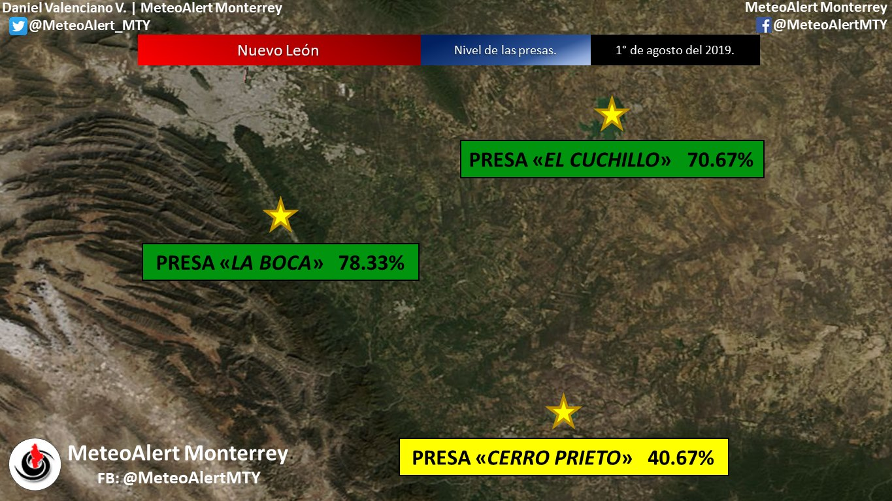

Nivel de las presas en Monterrey
Presa la Boca con: El Cuchillo con: Cerro Prieto con:Informacion
La Presa de la Boca, construida en el río
Santiago, es conocida por su belleza escénica y
su importancia en la regulación del flujo de
agua para el abastecimiento de la ciudad de
Monterrey y sus alrededores.
La Presa del Cuchillo, en el río Pesquería, es
una de las más grandes del país y sirve para
múltiples propósitos, incluyendo la generación
de energía hidroeléctrica, riego agrícola y
recreación.
La Presa del Cerro Prieto, ubicada en el río San
Juan, también contribuye a la generación de
energía y al abastecimiento de agua.
